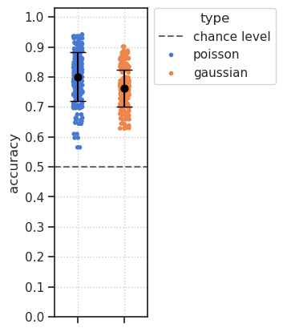

(03) Shattering dim#
Motivation: Accuracy in all possible pairwise categorization of MNIST digits. 5 digits per category.
Show code cell source
# HIDE CODE
import os, sys
from IPython.display import display
# tmp & extras dir
git_dir = os.path.join(os.environ['HOME'], 'Dropbox/git')
extras_dir = os.path.join(git_dir, 'jb-vase/_extras')
fig_base_dir = os.path.join(git_dir, 'jb-vae/figs')
tmp_dir = os.path.join(git_dir, 'jb-vae/tmp')
# GitHub
sys.path.insert(0, os.path.join(git_dir, '_PoissonVAE'))
from analysis.eval import sparse_score
from figures.fighelper import *
from vae.train_vae import *
# warnings, tqdm, & style
warnings.filterwarnings('ignore', category=DeprecationWarning)
from rich.jupyter import print
%matplotlib inline
set_style()
device_idx = 0
device = f'cuda:{device_idx}'
from analysis.shatter import (
shatter_analysis,
disjoint_groups,
digit2category
)
Experiment: LogReg vs. SVM vs. KNN#
Load trainer#
name = '/'.join([
'poisson_uniform_c(-3)_rmax(1)_MNIST_z-10_k-32_<conv+b|conv+b>',
'initscale-0.05_warmrestart-2_mc_b200-ep1200-lr(0.002)_beta(1:0x0.5)_temp(0.05:lin-0.5)_gr(1000)_(2024_05_01,17:07)',
])
tr, meta = load_quick(name, device=device, lite=False)
data, loss, etc = tr.validate()
loss_avg = {k: v.mean() for k, v in loss.items()}
loss_avg['tot'] = loss_avg['kl'] + loss_avg['mse']
print(loss_avg, '\n', meta)
{'mse': 27.612318, 'kl': 8.89106, 'kl_diag': 0.8891061, 'tot': 36.50338} { 'timestamp': '2024_05_01,17:07', 'checkpoint': 1200, 'global_step': 360000, 'root': '/home/hadi/Projects/PoissonVAE/models/poisson_uniform_c(-3)_rmax(1)_MNIST_z-10_k-32_<conv+b|conv+b>/initscale-0.05 _warmrestart-2_mc_b200-ep1200-lr(0.002)_beta(1:0x0.5)_temp(0.05:lin-0.5)_gr(1000)_(2024_05_01,17:07)', 'file': 'PoissonVAE+TrainerVAE-1200_(2024_05_01,22:04).pt' }
tr.show_recon(0.0), tr.show_samples(0.0);
Xtract data#
%%time
t = 0.0
data, loss, etc = {}, {}, {}
for k in ['trn', 'vld']:
data[k], loss[k], etc[k] = tr.forward(
dl_name=k, temp=t, full_data=True)
loss_avg = {
name: {k: v.mean() for k, v in d.items()}
for name, d in loss.items()
}
CPU times: user 15.2 s, sys: 348 ms, total: 15.6 s
Wall time: 3.25 s
Disjoint grouping of digits#
digits = tonp(tr.dl_trn.dataset.tensors[1]).astype(int)
groups = disjoint_groups(sorted(np.unique(digits)))
len(groups)
252
Classify#
from sklearn.svm import LinearSVC
from sklearn.linear_model import LogisticRegression
from sklearn.neighbors import KNeighborsClassifier
from sklearn.metrics import classification_report
kws = dict(
C=1.0,
penalty='l2',
random_state=0,
)
df = []
for clf_name in ['logreg', 'svm', 'knn']:
for c0, c1 in tqdm(groups, desc=clf_name, ncols=80):
y = digit2category(data['trn']['g'], c1)
y_vld = digit2category(data['vld']['g'], c1)
if clf_name == 'logreg':
clf = LogisticRegression(**kws)
elif clf_name == 'svm':
clf = LinearSVC(dual='auto', **kws)
elif clf_name == 'knn':
clf = KNeighborsClassifier()
else:
raise NotImplementedError(clf_name)
clf.fit(etc['trn']['log_dr'], y)
pred = clf.predict(etc['vld']['log_dr'])
report = classification_report(
y_true=y_vld,
y_pred=pred,
output_dict=True,
)
df.append({
'category_0': [c0],
'category_1': [c1],
'classifier': [type(clf).__name__],
'accuracy': [report['accuracy']],
'type': [tr.model.cfg.type],
})
df = pd.DataFrame(merge_dicts(df))
logreg: 100%|█████████████████████████████████| 252/252 [00:11<00:00, 21.54it/s]
svm: 100%|████████████████████████████████████| 252/252 [00:16<00:00, 15.74it/s]
knn: 100%|████████████████████████████████████| 252/252 [02:13<00:00, 1.89it/s]
df
| category_0 | category_1 | classifier | accuracy | type | |
|---|---|---|---|---|---|
| 0 | [0, 1, 2, 3, 4] | [5, 6, 7, 8, 9] | LogisticRegression | 0.7013 | poisson |
| 1 | [0, 1, 2, 3, 5] | [4, 6, 7, 8, 9] | LogisticRegression | 0.8461 | poisson |
| 2 | [0, 1, 2, 3, 6] | [4, 5, 7, 8, 9] | LogisticRegression | 0.8733 | poisson |
| 3 | [0, 1, 2, 3, 7] | [4, 5, 6, 8, 9] | LogisticRegression | 0.8612 | poisson |
| 4 | [0, 1, 2, 3, 8] | [4, 5, 6, 7, 9] | LogisticRegression | 0.8659 | poisson |
| ... | ... | ... | ... | ... | ... |
| 751 | [4, 5, 6, 7, 9] | [0, 1, 2, 3, 8] | KNeighborsClassifier | 0.9834 | poisson |
| 752 | [4, 5, 6, 8, 9] | [0, 1, 2, 3, 7] | KNeighborsClassifier | 0.9807 | poisson |
| 753 | [4, 5, 7, 8, 9] | [0, 1, 2, 3, 6] | KNeighborsClassifier | 0.9824 | poisson |
| 754 | [4, 6, 7, 8, 9] | [0, 1, 2, 3, 5] | KNeighborsClassifier | 0.9842 | poisson |
| 755 | [5, 6, 7, 8, 9] | [0, 1, 2, 3, 4] | KNeighborsClassifier | 0.9736 | poisson |
756 rows × 5 columns
sns.histplot(
data=df,
x='accuracy',
hue='classifier',
stat='percent',
bins=np.linspace(0.5, 1, 201),
alpha=0.8,
);
fig, ax = create_figure(1, 1, (1.5, 5))
ax.axhline(0.5, ls='--', color='dimgrey', label='chance level')
classifiers = list(df['classifier'].drop_duplicates())
sns.stripplot(
data=df,
x='classifier',
y='accuracy',
hue='classifier',
order=classifiers,
palette='muted',
legend=True,
ax=ax
)
move_legend(ax, (1, 1.02))
ax.set(xticklabels=[], xlabel='', ylim=(0, 1.03))
ax.locator_params(axis='y', nbins=11)
ax.grid()
mu = df.groupby('classifier')['accuracy'].mean()
sd = df.groupby('classifier')['accuracy'].std()
se = sd / df.groupby('classifier').size() ** 0.5
for i, clf in enumerate(classifiers):
ax.scatter(i, mu[clf], color='k', s=40, zorder=4)
ax.errorbar(i, mu[clf], yerr=sd[clf], fmt='none', color='black', capsize=7, zorder=3)
# Show plot
plt.show()
# plt.show()
Overall accuracy#
10-way classification
# LinearSVC
clf = LinearSVC(dual='auto').fit(
X=etc['trn']['log_dr'],
y=data['trn']['g'].astype(int),
)
report = classification_report(
y_true=data['vld']['g'].astype(int),
y_pred=clf.predict(etc['vld']['log_dr']),
output_dict=True,
)
print(f"{type(clf).__name__} ——— accuracy: {report['accuracy']}")
# LogisticRegression
clf = LogisticRegression().fit(
X=etc['trn']['log_dr'],
y=data['trn']['g'].astype(int),
)
report = classification_report(
y_true=data['vld']['g'].astype(int),
y_pred=clf.predict(etc['vld']['log_dr']),
output_dict=True,
)
print(f"{type(clf).__name__} ——— accuracy: {report['accuracy']}")
# KNeighborsClassifier
clf = KNeighborsClassifier().fit(
X=etc['trn']['log_dr'],
y=data['trn']['g'].astype(int),
)
report = classification_report(
y_true=data['vld']['g'].astype(int),
y_pred=clf.predict(etc['vld']['log_dr']),
output_dict=True,
)
print(f"{type(clf).__name__} ——— accuracy: {report['accuracy']}")
LinearSVC ——— accuracy: 0.9261
LogisticRegression ——— accuracy: 0.9417
KNeighborsClassifier ——— accuracy: 0.9613
Shattering Dim#
groups = disjoint_groups(range(10))
len(groups)
252
selected_models = {
'poisson': '/'.join([
'poisson_uniform_c(-3)_rmax(1)_MNIST_z-10_k-32_<conv+b|conv+b>',
'initscale-0.05_warmrestart-2_mc_b200-ep1200-lr(0.002)_beta(1:0x0.5)_temp(0.05:lin-0.5)_gr(1000)_(2024_05_01,17:07)'
]),
'gaussian': '/'.join([
'gaussian_None_MNIST_z-10_k-32_<conv+b|conv+b>',
'eps1.0-warm2_mc_b200-ep900-lr(0.002)_beta(1:0x0.5)_gr(1000)_(2024_05_02,08:38)',
]),
}
Logistic Regression#
df = []
for model_type, load_string in selected_models.items():
tr, meta = load_quick(load_string, device=device, lite=False)
t = 0.0 if model_type == 'poisson' else 1.0
data, loss, etc = {}, {}, {}
for k in ['trn', 'vld']:
data[k], loss[k], etc[k] = tr.forward(
dl_name=k, temp=t, full_data=True)
loss_avg = {
name: {k: v.mean() for k, v in d.items()}
for name, d in loss.items()
}
print(f"{model_type}:\n{loss_avg}")
tr.show_recon(t), tr.show_samples(t);
# prep to fit
key = 'log_dr' if model_type == 'poisson' else 'mu'
x = {k: v[key] for k, v in etc.items()}
labels = {k: v['g'] for k, v in data.items()}
# fit
_df = shatter_analysis(x, labels, groups, clf_type='logreg')
_df.insert(3, 'type', tr.model.cfg.type)
df.append(_df)
df = pd.concat(df)
poisson: {'trn': {'mse': 27.381172, 'kl': 8.876027, 'kl_diag': 0.8876025}, 'vld': {'mse': 27.433294, 'kl': 8.89106, 'kl_diag': 0.8891061}}
logreg: 252it [00:11, 21.59it/s]
gaussian: {'trn': {'mse': 9.200378, 'kl': 13.181685, 'kl_diag': 1.3181688}, 'vld': {'mse': 11.519066, 'kl': 13.1146965, 'kl_diag': 1.3114696}}
logreg: 252it [00:05, 43.43it/s]
df.groupby('type')['accuracy'].mean()
type
gaussian 0.762935
poisson 0.800558
Name: accuracy, dtype: float64
df.groupby('type')['accuracy'].std()
type
gaussian 0.061123
poisson 0.082196
Name: accuracy, dtype: float64
fig, ax = create_figure(1, 1, (1.5, 5))
ax.axhline(0.5, ls='--', color='dimgrey', label='chance level')
model_types = list(df['type'].drop_duplicates())
sns.stripplot(
data=df,
x='type',
y='accuracy',
hue='type',
order=model_types,
palette='muted',
legend=True,
size=4,
ax=ax
)
move_legend(ax, (1, 1.02))
ax.set(xticklabels=[], xlabel='', ylim=(0, 1.03), xlim=(-0.5, 1.5))
ax.locator_params(axis='y', nbins=11)
ax.grid()
mu = df.groupby('type')['accuracy'].mean()
sd = df.groupby('type')['accuracy'].std()
for i, k in enumerate(model_types):
ax.scatter(i, mu[k], color='k', s=40, zorder=4)
ax.errorbar(i, mu[k], yerr=sd[k], fmt='none', color='black', capsize=7, zorder=3)
plt.show()
accuracies = df.groupby('type')['accuracy'].apply(list)
accuracies
type
gaussian [0.6438, 0.7781, 0.758, 0.7747, 0.7886, 0.6387...
poisson [0.7013, 0.8461, 0.8733, 0.8612, 0.8659, 0.742...
Name: accuracy, dtype: object
t_stat, p_value = sp_stats.ttest_ind(
a=accuracies['poisson'],
b=accuracies['gaussian'],
)
print(p_value)
9.89075561234778e-09
sorted_ids = df.groupby('type')['accuracy'].apply(list).apply(np.argsort).to_dict()
sorted_ids
{'gaussian': array([219, 32, 221, 30, 246, 5, 0, 251, 237, 14, 10, 241, 25,
226, 52, 199, 205, 46, 60, 191, 229, 22, 130, 121, 6, 245,
231, 20, 17, 234, 227, 24, 178, 73, 23, 228, 239, 12, 177,
167, 84, 74, 21, 230, 170, 81, 236, 15, 107, 144, 72, 179,
19, 232, 53, 198, 165, 86, 233, 242, 18, 9, 220, 31, 150,
101, 137, 114, 143, 171, 108, 80, 8, 243, 164, 87, 195, 56,
197, 48, 203, 54, 173, 78, 13, 238, 166, 85, 100, 151, 95,
156, 49, 202, 240, 11, 35, 216, 213, 38, 142, 109, 211, 40,
161, 90, 157, 94, 192, 59, 126, 125, 83, 168, 92, 159, 98,
153, 26, 225, 70, 181, 2, 249, 214, 37, 97, 154, 204, 47,
184, 67, 187, 64, 129, 122, 217, 34, 218, 33, 162, 89, 235,
16, 88, 163, 111, 140, 93, 158, 134, 117, 208, 43, 58, 193,
212, 39, 248, 3, 1, 250, 41, 210, 42, 209, 222, 29, 206,
45, 155, 96, 36, 215, 103, 148, 186, 65, 182, 69, 4, 247,
91, 160, 244, 7, 51, 200, 55, 196, 123, 128, 27, 224, 50,
201, 116, 135, 112, 139, 62, 189, 68, 183, 127, 124, 57, 194,
152, 99, 180, 71, 110, 141, 147, 104, 82, 169, 223, 28, 79,
172, 77, 174, 176, 75, 119, 132, 146, 105, 138, 113, 175, 76,
102, 149, 106, 145, 136, 115, 44, 207, 131, 120, 63, 188, 66,
185, 190, 61, 118, 133]),
'poisson': array([ 52, 199, 24, 227, 219, 32, 222, 29, 46, 205, 21, 230, 221,
30, 210, 41, 213, 38, 25, 226, 198, 53, 117, 134, 48, 203,
9, 242, 22, 229, 211, 40, 0, 251, 73, 178, 217, 34, 26,
225, 208, 43, 173, 78, 60, 191, 114, 137, 202, 49, 108, 143,
103, 148, 31, 220, 87, 164, 47, 204, 246, 130, 121, 5, 84,
167, 187, 64, 33, 218, 126, 125, 23, 228, 39, 212, 215, 36,
59, 192, 35, 216, 56, 195, 15, 236, 197, 54, 122, 129, 144,
107, 153, 98, 214, 37, 27, 224, 42, 209, 94, 157, 245, 6,
163, 88, 81, 170, 67, 184, 243, 8, 206, 45, 233, 18, 76,
175, 55, 196, 93, 158, 151, 100, 146, 105, 154, 97, 201, 50,
69, 182, 72, 179, 150, 101, 177, 74, 58, 193, 166, 85, 223,
28, 161, 90, 171, 80, 68, 183, 12, 14, 239, 237, 156, 95,
139, 112, 155, 96, 70, 181, 109, 142, 13, 238, 241, 10, 200,
51, 1, 250, 86, 165, 75, 176, 141, 110, 186, 65, 140, 111,
83, 168, 17, 234, 248, 3, 106, 145, 147, 104, 92, 159, 4,
247, 249, 2, 11, 240, 7, 244, 116, 135, 232, 19, 127, 124,
188, 63, 160, 91, 123, 128, 57, 194, 20, 231, 62, 189, 152,
99, 235, 16, 44, 207, 138, 113, 118, 133, 132, 119, 180, 71,
120, 131, 77, 174, 89, 162, 172, 79, 169, 82, 185, 66, 61,
190, 115, 136, 149, 102])}
ids = np.concatenate([
sorted_ids['poisson'][-3:],
sorted_ids['poisson'][:3],
])
df.iloc[ids]
| group_idx | category_0 | category_1 | type | classifier | accuracy | |
|---|---|---|---|---|---|---|
| 136 | 136 | [1, 2, 3, 6, 8] | [0, 4, 5, 7, 9] | poisson | LogisticRegression | 0.9377 |
| 149 | 149 | [1, 2, 4, 7, 9] | [0, 3, 5, 6, 8] | poisson | LogisticRegression | 0.9425 |
| 102 | 102 | [0, 3, 5, 6, 8] | [1, 2, 4, 7, 9] | poisson | LogisticRegression | 0.9425 |
| 52 | 52 | [0, 1, 6, 7, 8] | [2, 3, 4, 5, 9] | poisson | LogisticRegression | 0.5669 |
| 199 | 199 | [2, 3, 4, 5, 9] | [0, 1, 6, 7, 8] | poisson | LogisticRegression | 0.5669 |
| 24 | 24 | [0, 1, 3, 4, 8] | [2, 5, 6, 7, 9] | poisson | LogisticRegression | 0.5964 |
ids = np.concatenate([
sorted_ids['gaussian'][-3:],
sorted_ids['gaussian'][:3],
])
df.iloc[ids]
| group_idx | category_0 | category_1 | type | classifier | accuracy | |
|---|---|---|---|---|---|---|
| 61 | 61 | [0, 2, 3, 5, 6] | [1, 4, 7, 8, 9] | poisson | LogisticRegression | 0.9351 |
| 118 | 118 | [0, 4, 6, 7, 9] | [1, 2, 3, 5, 8] | poisson | LogisticRegression | 0.9082 |
| 133 | 133 | [1, 2, 3, 5, 8] | [0, 4, 6, 7, 9] | poisson | LogisticRegression | 0.9082 |
| 219 | 219 | [2, 4, 5, 7, 8] | [0, 1, 3, 6, 9] | poisson | LogisticRegression | 0.6087 |
| 32 | 32 | [0, 1, 3, 6, 9] | [2, 4, 5, 7, 8] | poisson | LogisticRegression | 0.6087 |
| 221 | 221 | [2, 4, 5, 8, 9] | [0, 1, 3, 6, 7] | poisson | LogisticRegression | 0.6573 |
SVM#
df = []
for model_type, load_string in selected_models.items():
tr, meta = load_quick(load_string, device=device, lite=False)
t = 0.0 if model_type == 'poisson' else 1.0
data, loss, etc = {}, {}, {}
for k in ['trn', 'vld']:
data[k], loss[k], etc[k] = tr.forward(
dl_name=k, temp=t, full_data=True)
loss_avg = {
name: {k: v.mean() for k, v in d.items()}
for name, d in loss.items()
}
print(f"{model_type}:\n{loss_avg}")
tr.show_recon(t), tr.show_samples(t);
# prep to fit
key = 'log_dr' if model_type == 'poisson' else 'mu'
x = {k: v[key] for k, v in etc.items()}
labels = {k: v['g'] for k, v in data.items()}
# fit
_df = shatter_analysis(x, labels, groups, clf_type='svm')
_df.insert(3, 'type', tr.model.cfg.type)
df.append(_df)
df = pd.concat(df)
poisson: {'trn': {'mse': 27.381172, 'kl': 8.876027, 'kl_diag': 0.8876025}, 'vld': {'mse': 27.433294, 'kl': 8.89106, 'kl_diag': 0.8891061}}
svm: 252it [00:15, 16.02it/s]
gaussian: {'trn': {'mse': 9.200378, 'kl': 13.181685, 'kl_diag': 1.3181688}, 'vld': {'mse': 11.519066, 'kl': 13.1146965, 'kl_diag': 1.3114696}}

svm: 252it [00:07, 31.98it/s]
df.groupby('type')['accuracy'].mean()
type
gaussian 0.762971
poisson 0.800638
Name: accuracy, dtype: float64
df.groupby('type')['accuracy'].std()
type
gaussian 0.061050
poisson 0.081627
Name: accuracy, dtype: float64
fig, ax = create_figure(1, 1, (1.5, 5))
ax.axhline(0.5, ls='--', color='dimgrey', label='chance level')
model_types = list(df['type'].drop_duplicates())
sns.stripplot(
data=df,
x='type',
y='accuracy',
hue='type',
order=model_types,
palette='muted',
legend=True,
size=4,
ax=ax
)
move_legend(ax, (1, 1.02))
ax.set(xticklabels=[], xlabel='', ylim=(0, 1.03), xlim=(-0.5, 1.5))
ax.locator_params(axis='y', nbins=11)
ax.grid()
mu = df.groupby('type')['accuracy'].mean()
sd = df.groupby('type')['accuracy'].std()
for i, k in enumerate(model_types):
ax.scatter(i, mu[k], color='k', s=40, zorder=4)
ax.errorbar(i, mu[k], yerr=sd[k], fmt='none', color='black', capsize=7, zorder=3)
plt.show()

accuracies = df.groupby('type')['accuracy'].apply(list)
accuracies
type
gaussian [0.6443, 0.7786, 0.7575, 0.7759, 0.7886, 0.638...
poisson [0.7, 0.843, 0.8711, 0.8574, 0.8661, 0.74, 0.7...
Name: accuracy, dtype: object
t_stat, p_value = sp_stats.ttest_ind(
a=accuracies['poisson'],
b=accuracies['gaussian'],
)
print(p_value)
8.103069557708762e-09
sorted_ids = df.groupby('type')['accuracy'].apply(list).apply(np.argsort).to_dict()
sorted_ids
{'gaussian': array([219, 32, 221, 30, 246, 5, 0, 251, 14, 237, 10, 241, 25,
226, 199, 52, 205, 46, 191, 60, 229, 22, 231, 20, 121, 130,
245, 6, 17, 234, 24, 227, 73, 178, 23, 228, 239, 12, 84,
167, 177, 74, 230, 21, 170, 81, 107, 144, 72, 179, 15, 236,
232, 19, 198, 53, 165, 86, 9, 242, 233, 18, 220, 31, 150,
101, 137, 114, 171, 80, 143, 108, 8, 243, 87, 164, 56, 195,
197, 54, 78, 173, 166, 85, 48, 203, 151, 100, 238, 13, 202,
49, 156, 95, 240, 11, 216, 35, 213, 38, 109, 142, 161, 90,
211, 40, 192, 59, 94, 157, 126, 125, 83, 168, 98, 153, 92,
159, 249, 2, 70, 181, 225, 26, 214, 37, 97, 154, 204, 47,
184, 67, 187, 64, 129, 122, 218, 33, 158, 93, 217, 34, 16,
235, 88, 163, 89, 162, 134, 58, 117, 193, 208, 43, 111, 140,
39, 212, 248, 3, 250, 1, 41, 210, 42, 209, 29, 222, 45,
206, 155, 96, 103, 148, 7, 244, 36, 215, 69, 182, 186, 65,
247, 4, 160, 91, 51, 200, 55, 196, 123, 128, 224, 27, 50,
201, 116, 135, 112, 139, 62, 189, 68, 183, 127, 124, 57, 194,
180, 71, 152, 99, 110, 141, 147, 104, 82, 169, 79, 172, 77,
174, 28, 223, 176, 75, 119, 132, 105, 146, 138, 113, 76, 175,
102, 149, 106, 145, 136, 115, 44, 207, 131, 120, 63, 188, 66,
185, 190, 61, 118, 133]),
'poisson': array([ 52, 199, 227, 24, 219, 32, 29, 222, 46, 205, 230, 21, 221,
30, 41, 210, 213, 38, 226, 25, 229, 22, 198, 53, 203, 48,
0, 251, 134, 117, 242, 9, 211, 40, 208, 43, 225, 26, 178,
73, 217, 34, 173, 78, 49, 202, 60, 191, 114, 137, 143, 108,
31, 220, 148, 103, 5, 204, 47, 246, 33, 218, 64, 187, 121,
130, 167, 84, 125, 126, 228, 23, 164, 87, 39, 212, 36, 215,
59, 192, 35, 216, 56, 195, 15, 236, 197, 54, 153, 98, 107,
144, 129, 122, 224, 27, 214, 37, 88, 163, 209, 42, 94, 157,
184, 67, 6, 245, 170, 81, 45, 206, 243, 8, 18, 233, 100,
151, 196, 55, 175, 76, 158, 93, 182, 69, 105, 146, 97, 154,
50, 201, 72, 179, 150, 101, 177, 74, 166, 85, 58, 193, 161,
90, 223, 28, 80, 171, 68, 183, 239, 12, 95, 156, 237, 14,
139, 112, 109, 142, 13, 238, 96, 155, 70, 181, 1, 250, 51,
200, 241, 10, 86, 165, 186, 65, 75, 176, 110, 141, 140, 111,
83, 168, 3, 248, 234, 17, 92, 159, 104, 147, 106, 145, 4,
247, 249, 2, 11, 240, 244, 7, 116, 135, 127, 124, 19, 232,
63, 188, 160, 91, 123, 128, 189, 62, 194, 57, 16, 235, 20,
231, 152, 99, 138, 113, 207, 44, 132, 119, 118, 133, 77, 174,
71, 180, 131, 120, 162, 89, 172, 79, 169, 82, 66, 185, 61,
136, 190, 115, 102, 149])}
ids = np.concatenate([
sorted_ids['poisson'][-3:],
sorted_ids['poisson'][:3],
])
df.iloc[ids]
| group_idx | category_0 | category_1 | type | classifier | accuracy | |
|---|---|---|---|---|---|---|
| 115 | 115 | [0, 4, 5, 7, 9] | [1, 2, 3, 6, 8] | poisson | LinearSVC | 0.9359 |
| 102 | 102 | [0, 3, 5, 6, 8] | [1, 2, 4, 7, 9] | poisson | LinearSVC | 0.9414 |
| 149 | 149 | [1, 2, 4, 7, 9] | [0, 3, 5, 6, 8] | poisson | LinearSVC | 0.9414 |
| 52 | 52 | [0, 1, 6, 7, 8] | [2, 3, 4, 5, 9] | poisson | LinearSVC | 0.5651 |
| 199 | 199 | [2, 3, 4, 5, 9] | [0, 1, 6, 7, 8] | poisson | LinearSVC | 0.5651 |
| 227 | 227 | [2, 5, 6, 7, 9] | [0, 1, 3, 4, 8] | poisson | LinearSVC | 0.5971 |
ids = np.concatenate([
sorted_ids['gaussian'][-3:],
sorted_ids['gaussian'][:3],
])
df.iloc[ids]
| group_idx | category_0 | category_1 | type | classifier | accuracy | |
|---|---|---|---|---|---|---|
| 61 | 61 | [0, 2, 3, 5, 6] | [1, 4, 7, 8, 9] | poisson | LinearSVC | 0.9359 |
| 118 | 118 | [0, 4, 6, 7, 9] | [1, 2, 3, 5, 8] | poisson | LinearSVC | 0.9103 |
| 133 | 133 | [1, 2, 3, 5, 8] | [0, 4, 6, 7, 9] | poisson | LinearSVC | 0.9103 |
| 219 | 219 | [2, 4, 5, 7, 8] | [0, 1, 3, 6, 9] | poisson | LinearSVC | 0.6099 |
| 32 | 32 | [0, 1, 3, 6, 9] | [2, 4, 5, 7, 8] | poisson | LinearSVC | 0.6099 |
| 221 | 221 | [2, 4, 5, 8, 9] | [0, 1, 3, 6, 7] | poisson | LinearSVC | 0.6564 |